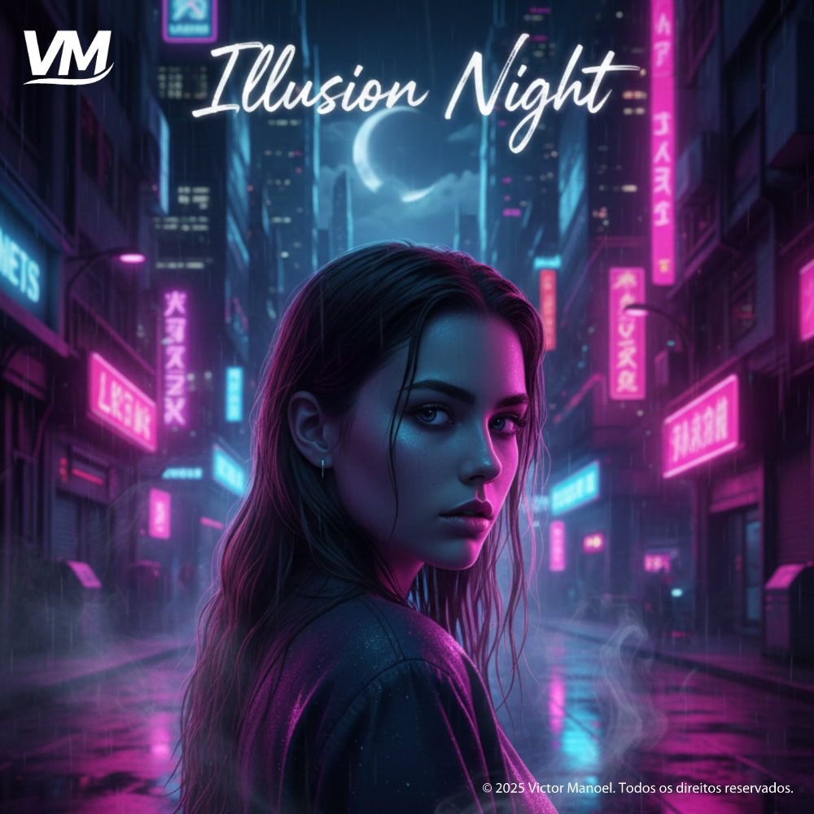

ILLUSION
NIGHT
NEWNIGHT
SOUND
FAIXA EM DESTAQUE
Illusion Night
Victor Manuel
ARTISTA INDEPENDENTE
Música, sentimento e histórias que merecem ser ouvidas.

FAIXA EM DESTAQUE
Victor Manuel
Victor Manoel é um artista independente que transforma sentimentos, ideias e experiências em música. Com uma identidade artística própria, desenvolve composições que exploram diferentes sonoridades, transitando entre o rap, o hip-hop e o trap romântico.
Sua trajetória reúne lançamentos como Illusion Night, Outra Vez, Meu Porto e Stay With Me Tonight, entre outros trabalhos que representam diferentes fases de sua evolução musical. Sempre em busca de novas possibilidades, Victor segue construindo seu caminho e fortalecendo sua presença no universo digital.
Conheça meus lançamentos ao longo da minha trajetória ↗Escolha uma faixa e ouça na sua plataforma favorita.
Tem uma ideia, proposta, parceria ou só quer mandar uma mensagem? Vou gostar de receber seu contato.
Conversar pelo WhatsApp ↗